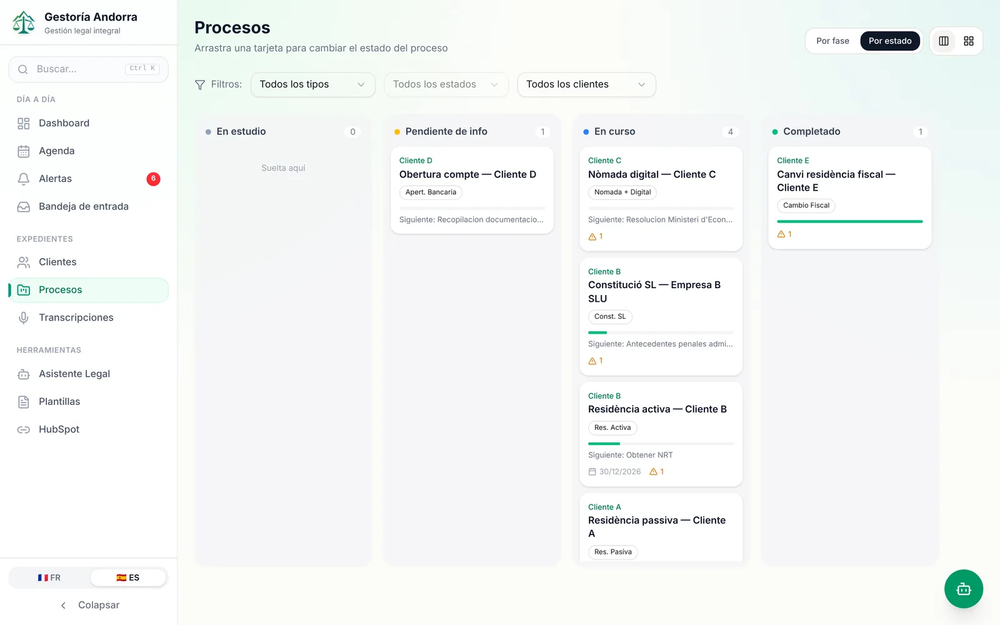

CRM d'expedients per a una gestoria
Clients amb KYC, tràmits amb passos, agenda de venciments, alertes de passaports i pòlisses, portal perquè el client pugi documents, transcripció de reunions i plantilles. Ctrl+K i qualsevol expedient en un segon.
- Expedients d'inversió estrangera, constitucions, residències
- Integrat amb HubSpot i amb els agents d’IA
- LQPD per disseny: registres, límits, dades a Europa